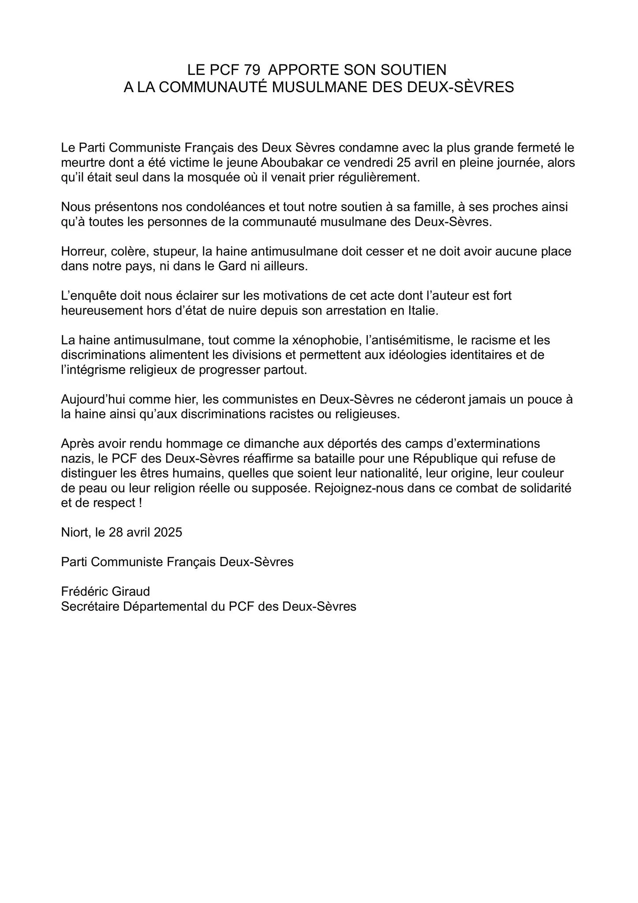

Communiqué du PCF 79
Notre soutien à la communauté musulmane des Deux-Sèvres après le meurtre d’Aboubacar Cissé
Date indiquée par Facebook · 28 avril 2025
Repères éditoriaux
Nous avons condamné le meurtre d’Aboubacar Cissé et exprimé notre soutien à sa famille, à ses proches et à la communauté musulmane des Deux-Sèvres. Le communiqué signé par Frédéric Giraud le 28 avril 2025 est joint.
Texte conservé avec la publication
Communiqué de la Fédération du PCF en Deux-Sèvres après l'horrible meurtre du jeune Aboubacar Cissé.

Sources
Archive rouge · export Facebook · AR-0002-FB-01137
À lire aussi · Notre soutien à la communauté juive des Deux-Sèvres après l’agression du rabbin d’Orléans